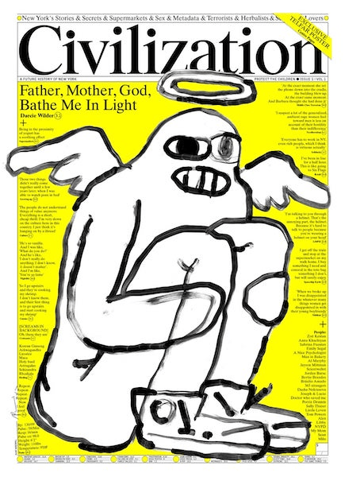

Back
10 things to focus on
- single serve sites
-
Civilization Newspaper

-
Quilts as a form of storytelling (1, 2, 3)
-
Mary Oliver's poetry
-
genderfail project
-
queer archive work
-
How to: with John Wilson
-
Walking on piles of shells on Savin Beach
-
Do Nothing Club, Marina Cardoso
-
Nicholas Britell's musical scores and compositions